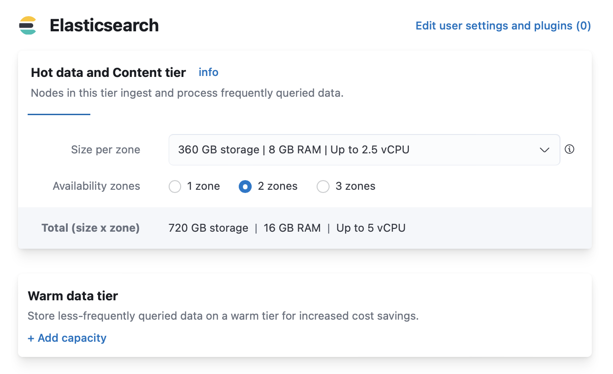
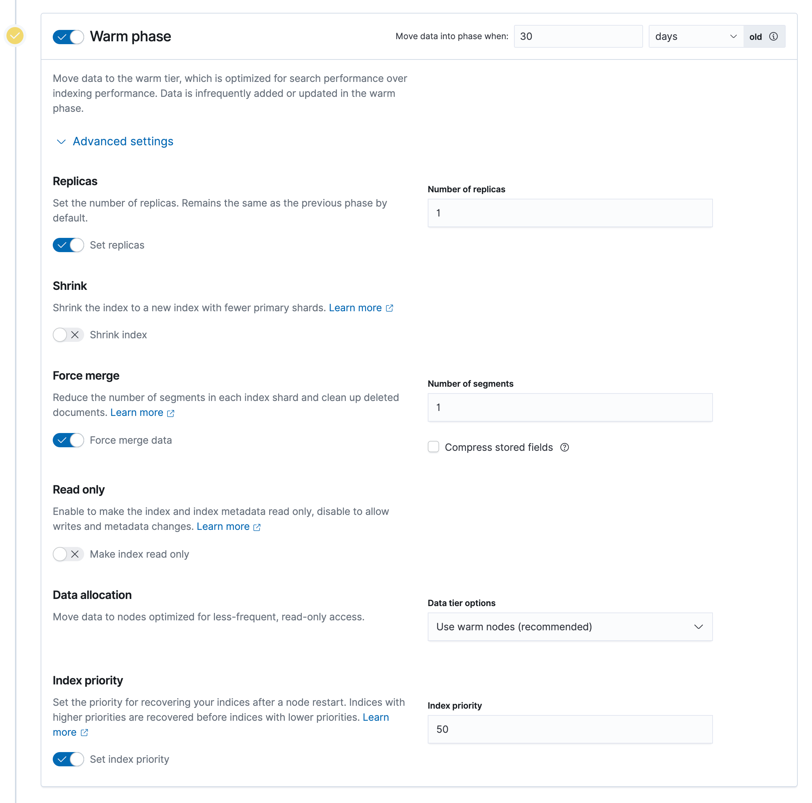
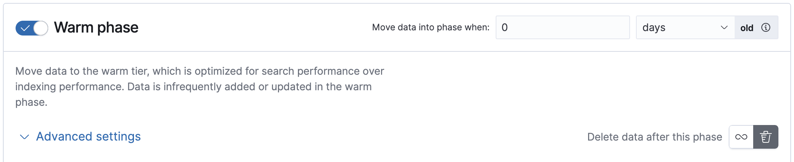
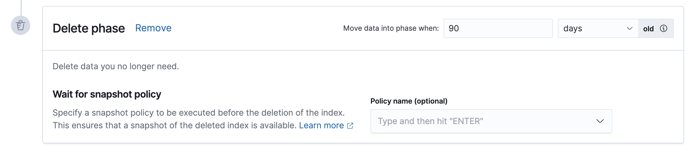

Tutorial: Customize built-in ILM policiesedit
Elasticsearch includes the following built-in ILM policies:
-
logs@lifecycle -
metrics@lifecycle -
synthetics@lifecycle
Elastic Agent uses these policies to manage backing indices for its data streams. This tutorial shows you how to use Kibana’s Index Lifecycle Policies to customize these policies based on your application’s performance, resilience, and retention requirements.
Scenarioedit
You want to send log files to an Elasticsearch cluster so you can visualize and analyze the data. This data has the following retention requirements:
- When the write index reaches 50GB or is 30 days old, roll over to a new index.
- After rollover, keep indices in the hot data tier for 30 days.
-
30 days after rollover:
- Move indices to the warm data tier.
- Set replica shards to 1.
- Force merge multiple index segments to free up the space used by deleted documents.
- Delete indices 90 days after rollover.
Prerequisitesedit
To complete this tutorial, you’ll need:
-
An Elasticsearch cluster with hot and warm data tiers.
-
Elasticsearch Service: Elastic Stack deployments on Elasticsearch Service include a hot tier by default. To add a warm tier, edit your deployment and click Add capacity for the warm data tier.
 -
Self-managed cluster: Assign
data_hotanddata_warmroles to nodes as described in Data tiers.For example, include the
data_warmnode role in theelasticsearch.ymlfile of each node in the warm tier:node.roles: [ data_warm ]
-
- A host with Elastic Agent installed and configured to send logs to your Elasticsearch cluster.
Duplicate the policyedit
Elastic Agent uses data streams with an index pattern of logs-*-* to store log
monitoring data. The managed logs@lifecycle ILM policy automatically manages
backing indices for these data streams.
If you don’t want to use the policy defaults, then you can customize the managed policy and then save it as a new policy. You can then use the new policy in related component templates and index templates.
You should never edit managed policies directly. Changes to managed policies might be rolled back or overwritten.
To save the logs@lifecycle policy as a new policy in Kibana:
- Open the menu and go to Stack Management > Index Lifecycle Policies.
- Toggle Include managed system policies.
-
Select the
logs@lifecyclepolicy. -
On the Edit policy logs page, toggle Save as new policy, and then provide a new name for the policy, for example,
logs-custom.
The logs@lifecycle policy uses the recommended rollover defaults: Start writing to a new
index when the current write index reaches 50GB or becomes 30 days old.
To view or change the rollover settings, click Advanced settings for the hot phase. Then disable Use recommended defaults to display the rollover settings.
Modify the policyedit
The default logs@lifecycle policy is designed to prevent the creation of many tiny daily
indices. You can modify your copy of the policy to meet your performance requirements and
manage resource usage.
-
Activate the warm phase and click Advanced settings.
- Set Move data into phase when to 30 days old. This moves indices to the warm tier 30 days after rollover.
- Enable Set replicas and change Number of replicas to 1.
- Enable Force merge data and set Number of segments to 1.
 -
In the warm phase, click the trash icon to enable the delete phase.
In the delete phase, set Move data into phase when to 90 days old. This deletes indices 90 days after rollover.
 - Click Save as new policy.
Copies of managed ILM policies are also marked as Managed. You can use the Create or update lifecycle policy API to update the _meta.managed parameter to false.
Apply the policyedit
To apply your new ILM policy to the logs index template, create or edit the logs@custom component template.
A *@custom component template allows you to customize the mappings and settings of managed index templates, without having to override managed index templates or component templates. This type of component template is automatically picked up by the index template. Learn more.
- Click on the Component Template tab and click Create component template.
-
Under Logistics, name the component template
logs@custom. -
Under Index settings, set the ILM policy name created in the previous step:
{ "index": { "lifecycle": { "name": "logs-custom" } } } - Continue to Review, and then click Save component template.
-
Click the Index Templates, tab, and then select the
logsindex template. -
In the summary, view the Component templates list.
logs@customshould be listed.